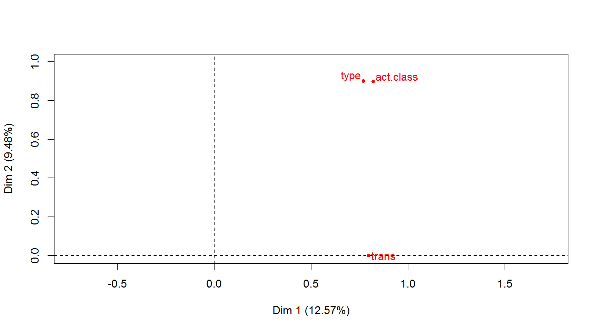
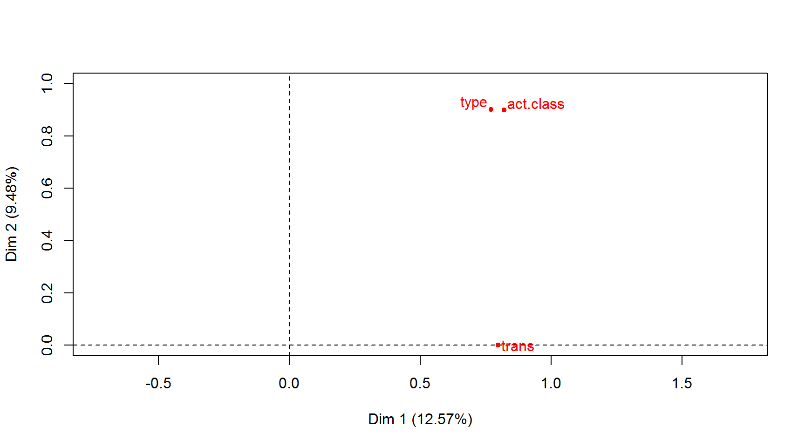
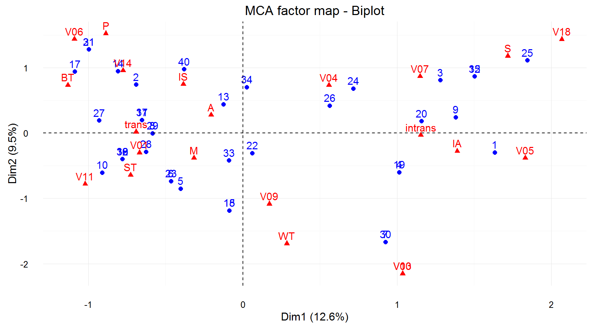
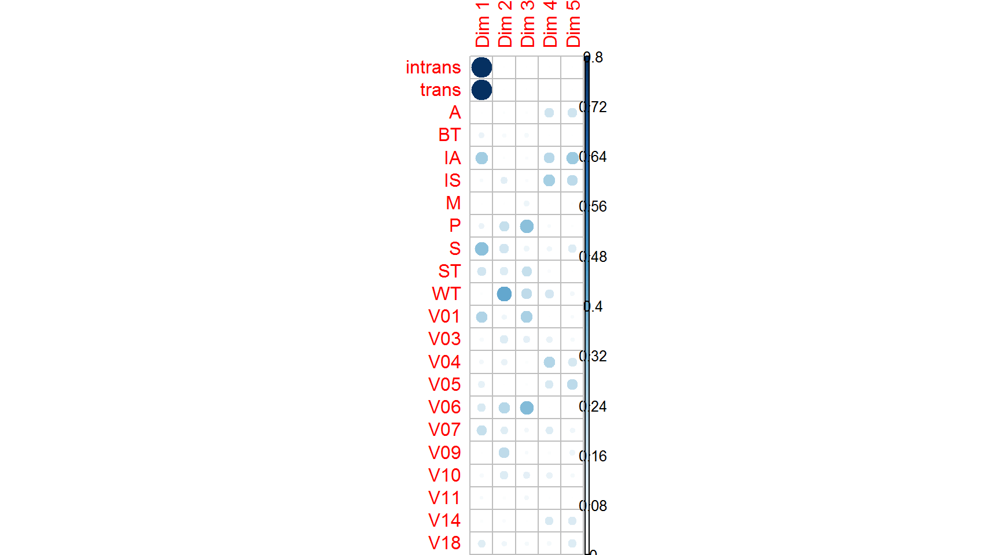
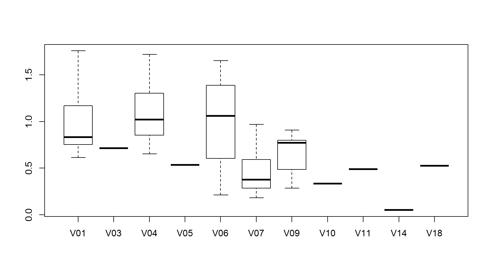

Polish
csvdata = read.csv("verbs_infinitive.csv", encoding="UTF-8", check.names=FALSE)
genderfields = c("m1", "m2", "m3", "f", "n")
numberfields = c("sg", "pl")
formfields = c("inf", "praet")
syntaxfields = c("inf+conj", "praet+conj", "inf+adv", "praet+adv")
countfields = c("count")
percentfields = c("PELCRA", "Sketch")
allfields = list(genderfields, numberfields, formfields, syntaxfields, percentfields)#Describe data with the help of graphs
ggplot(csvdata, aes(verb, count)) +
geom_bar(position = "dodge", stat="identity") +
coord_flip()
for (fields in allfields){
data=csvdata[c("verb", fields)];
count = 1;
len = 10;
while (count<40) {
start = count
end = start+len-1
shortdata = data[start:end,]
data.m <- melt(shortdata, id.vars="verb")
print(
ggplot(data.m, aes(verb, value, fill=variable)) +
geom_bar(position = "dodge", stat="identity")
)
count=count+len
}
}


library(plotly)##
## Attaching package: 'plotly'## The following object is masked from 'package:ggplot2':
##
## last_plot## The following object is masked from 'package:graphics':
##
## layoutp <- ggplot(csvdata, aes(x = inf, y = praet))+
geom_point(aes(color = type))+
scale_y_log10()+
scale_x_log10()+
theme_bw()+
geom_smooth(method = "lm")
ggplotly(p, tooltip = c("z"))p <- ggplot(csvdata, aes(x = inf, y = praet))+
geom_point(aes(color = act.class))+
scale_y_log10()+
scale_x_log10()+
theme_bw()+
geom_smooth(method = "lm")
ggplotly(p, tooltip = c("z"))p <- ggplot(csvdata, aes(x = inf, y = praet))+
geom_point(aes(color = trans))+
scale_y_log10()+
scale_x_log10()+
theme_bw()+
geom_smooth(method = "lm")
ggplotly(p, tooltip = c("z"))#Data aggregation
aggdata <- aggregate(verb ~ inf + praet, data = csvdata,paste, collapse="-")
p <- ggplot(aggdata, aes(x = inf, y = praet, z = verb))+
geom_point()+
scale_y_log10()+
scale_x_log10()+
theme_bw()
ggplotly(p, tooltip = c("z"))#MCA
library(FactoMineR)
newdata <- csvdata$inf/csvdata$praet
csvdata$newdata <- newdata
#MCA doesn't work to work with numerical data
q <- csvdata[c("trans", "act.class", "type")]
res.mca <- MCA(q) 

summary(res.mca, nb.dec = 2, ncp = 2)##
## Call:
## MCA(X = q)
##
##
## Eigenvalues
## Dim.1 Dim.2 Dim.3 Dim.4 Dim.5 Dim.6 Dim.7
## Variance 0.80 0.60 0.55 0.52 0.50 0.45 0.41
## % of var. 12.57 9.48 8.63 8.19 7.86 7.15 6.49
## Cumulative % of var. 12.57 22.05 30.68 38.87 46.74 53.89 60.38
## Dim.8 Dim.9 Dim.10 Dim.11 Dim.12 Dim.13 Dim.14
## Variance 0.34 0.33 0.33 0.33 0.27 0.22 0.18
## % of var. 5.43 5.26 5.26 5.26 4.28 3.48 2.87
## Cumulative % of var. 65.81 71.07 76.34 81.60 85.88 89.36 92.22
## Dim.15 Dim.16 Dim.17 Dim.18 Dim.19
## Variance 0.16 0.13 0.09 0.07 0.05
## % of var. 2.49 1.99 1.48 1.05 0.77
## Cumulative % of var. 94.71 96.70 98.18 99.23 100.00
##
## Individuals (the 10 first)
## Dim.1 ctr cos2 Dim.2 ctr cos2
## 1 | 1.63 8.39 0.17 | -0.30 0.36 0.01 |
## 2 | -0.69 1.51 0.03 | 0.74 2.29 0.04 |
## 3 | 1.28 5.16 0.28 | 0.81 2.73 0.11 |
## 4 | 1.01 3.23 0.22 | -0.60 1.49 0.07 |
## 5 | -0.40 0.51 0.05 | -0.85 3.00 0.23 |
## 6 | -0.47 0.68 0.07 | -0.73 2.24 0.17 |
## 7 | 0.92 2.68 0.05 | -1.67 11.57 0.17 |
## 8 | -0.59 1.08 0.09 | 0.00 0.00 0.00 |
## 9 | 1.38 5.97 0.36 | 0.24 0.24 0.01 |
## 10 | -0.91 2.61 0.06 | -0.60 1.51 0.03 |
##
## Categories (the 10 first)
## Dim.1 ctr cos2 v.test Dim.2 ctr cos2 v.test
## intrans | 1.15 20.87 0.80 5.58 | -0.03 0.02 0.00 -0.15 |
## trans | -0.69 12.52 0.80 -5.58 | 0.02 0.01 0.00 0.15 |
## A | -0.21 0.18 0.00 -0.43 | 0.28 0.43 0.01 0.58 |
## BT | -1.13 2.69 0.07 -1.62 | 0.73 1.50 0.03 1.05 |
## IA | 1.39 10.12 0.28 3.28 | -0.27 0.52 0.01 -0.65 |
## IS | -0.39 0.94 0.03 -1.01 | 0.75 4.67 0.10 1.96 |
## M | -0.32 0.21 0.01 -0.45 | -0.38 0.40 0.01 -0.55 |
## P | -0.89 2.48 0.06 -1.58 | 1.53 9.69 0.19 2.71 |
## S | 1.72 12.35 0.33 3.57 | 1.18 7.75 0.16 2.46 |
## ST | -0.73 4.97 0.15 -2.44 | -0.64 5.14 0.12 -2.16 |
##
## Categorical variables (eta2)
## Dim.1 Dim.2
## trans | 0.80 0.00 |
## act.class | 0.82 0.90 |
## type | 0.77 0.90 |library(factoextra)
fviz_screeplot(res.mca)fviz_contrib(res.mca, choice = "var", axes = 1, top = 10)
fviz_mca_var(res.mca, col.var ="contrib")+scale_color_gradient2(low="white", mid="blue", high="red", midpoint=2)+theme_minimal()fviz_mca_ind(res.mca, label="none", habillage = "trans", addEllipses = TRUE, ellipse.level = 0.95)
fviz_mca_ind(res.mca, label="none", habillage = "type", addEllipses = TRUE, ellipse.level = 0.95)## Too few points to calculate an ellipse
## Too few points to calculate an ellipse
## Too few points to calculate an ellipse
## Too few points to calculate an ellipse
## Too few points to calculate an ellipse
## Too few points to calculate an ellipse## Warning: The shape palette can deal with a maximum of 6 discrete values
## because more than 6 becomes difficult to discriminate; you have
## 11. Consider specifying shapes manually if you must have them.
## Warning: The shape palette can deal with a maximum of 6 discrete values
## because more than 6 becomes difficult to discriminate; you have
## 11. Consider specifying shapes manually if you must have them.## Warning: Removed 10 rows containing missing values (geom_point).## Warning: Removed 5 rows containing missing values (geom_point).## Warning: The shape palette can deal with a maximum of 6 discrete values
## because more than 6 becomes difficult to discriminate; you have
## 11. Consider specifying shapes manually if you must have them.fviz_mca_ind(res.mca, label="none", habillage = "act.class", addEllipses = TRUE, ellipse.level = 0.95)## Too few points to calculate an ellipse
## Too few points to calculate an ellipse
## Too few points to calculate an ellipse## Warning: The shape palette can deal with a maximum of 6 discrete values
## because more than 6 becomes difficult to discriminate; you have 9.
## Consider specifying shapes manually if you must have them.## Warning: The shape palette can deal with a maximum of 6 discrete values
## because more than 6 becomes difficult to discriminate; you have 9.
## Consider specifying shapes manually if you must have them.## Warning: Removed 18 rows containing missing values (geom_point).## Warning: Removed 3 rows containing missing values (geom_point).## Warning: The shape palette can deal with a maximum of 6 discrete values
## because more than 6 becomes difficult to discriminate; you have 9.
## Consider specifying shapes manually if you must have them.
#Clusterization#Regression
ks.test(newdata, "pnorm")##
## One-sample Kolmogorov-Smirnov test
##
## data: newdata
## D = 0.54714, p-value = 9.202e-12
## alternative hypothesis: two-sidedqqnorm(newdata)
qqline(newdata)for.regr <- csvdata[,c("newdata", "trans", "act.class", "type", "Sketch", "PELCRA")]
lr <- lm(newdata ~ ., data = for.regr)
summary(lr)##
## Call:
## lm(formula = newdata ~ ., data = for.regr)
##
## Residuals:
## Min 1Q Median 3Q Max
## -0.4103 -0.1674 0.0000 0.1340 0.7271
##
## Coefficients:
## Estimate Std. Error t value Pr(>|t|)
## (Intercept) 1.50662 0.32965 4.570 0.000237 ***
## transtrans -0.35448 0.23486 -1.509 0.148567
## act.classBT 0.01070 0.36838 0.029 0.977140
## act.classIA -0.67454 0.32956 -2.047 0.055568 .
## act.classIS -0.43005 0.29450 -1.460 0.161457
## act.classM -0.27991 0.36849 -0.760 0.457331
## act.classP 0.17474 0.38983 0.448 0.659333
## act.classS -0.45963 0.35056 -1.311 0.206300
## act.classST -0.08961 0.27502 -0.326 0.748293
## act.classWT 0.03658 0.36410 0.100 0.921094
## typeV03 -0.82682 0.51033 -1.620 0.122579
## typeV04 0.04130 0.26281 0.157 0.876886
## typeV05 -0.27473 0.46266 -0.594 0.560031
## typeV06 -0.11617 0.30085 -0.386 0.703925
## typeV07 -0.35427 0.29501 -1.201 0.245365
## typeV09 -0.29581 0.22222 -1.331 0.199766
## typeV10 -1.20771 0.51030 -2.367 0.029363 *
## typeV11 -0.55795 0.39100 -1.427 0.170708
## typeV14 0.48555 1.34653 0.361 0.722600
## typeV18 -0.49789 0.49170 -1.013 0.324679
## Sketch -8.95580 10.49000 -0.854 0.404465
## PELCRA 12.00148 78.32771 0.153 0.879928
## ---
## Signif. codes: 0 '***' 0.001 '**' 0.01 '*' 0.05 '.' 0.1 ' ' 1
##
## Residual standard error: 0.3618 on 18 degrees of freedom
## Multiple R-squared: 0.6471, Adjusted R-squared: 0.2354
## F-statistic: 1.572 on 21 and 18 DF, p-value: 0.1682a <- summary(step(lr, direction = "both"))## Start: AIC=-69.27
## newdata ~ trans + act.class + type + Sketch + PELCRA
##
## Df Sum of Sq RSS AIC
## - PELCRA 1 0.00307 2.3594 -71.219
## - type 10 1.38063 3.7369 -70.825
## - Sketch 1 0.09541 2.4517 -69.684
## - act.class 8 1.13687 3.4932 -69.523
## <none> 2.3563 -69.271
## - trans 1 0.29822 2.6545 -66.505
##
## Step: AIC=-71.22
## newdata ~ trans + act.class + type + Sketch
##
## Df Sum of Sq RSS AIC
## - type 10 1.37912 3.7385 -72.808
## <none> 2.3594 -71.219
## - act.class 8 1.16303 3.5224 -71.189
## - Sketch 1 0.19081 2.5502 -70.109
## + PELCRA 1 0.00307 2.3563 -69.271
## - trans 1 0.30002 2.6594 -68.431
##
## Step: AIC=-72.81
## newdata ~ trans + act.class + Sketch
##
## Df Sum of Sq RSS AIC
## - trans 1 0.08739 3.8259 -73.884
## <none> 3.7385 -72.808
## - Sketch 1 0.23023 3.9687 -72.417
## - act.class 8 1.92239 5.6609 -72.212
## + type 10 1.37912 2.3594 -71.219
## + PELCRA 1 0.00157 3.7369 -70.825
##
## Step: AIC=-73.88
## newdata ~ act.class + Sketch
##
## Df Sum of Sq RSS AIC
## <none> 3.8259 -73.884
## + trans 1 0.08739 3.7385 -72.808
## - act.class 8 2.05453 5.8804 -72.690
## - Sketch 1 0.33299 4.1589 -72.545
## + PELCRA 1 0.00079 3.8251 -71.892
## + type 10 1.16649 2.6594 -68.431lrType <- lm(newdata ~ type, data = csvdata)
summary(lrType)##
## Call:
## lm(formula = newdata ~ type, data = csvdata)
##
## Residuals:
## Min 1Q Median 3Q Max
## -0.7848 -0.2074 0.0000 0.1345 0.7592
##
## Coefficients:
## Estimate Std. Error t value Pr(>|t|)
## (Intercept) 0.997597 0.097657 10.215 4.06e-11 ***
## typeV03 -0.283311 0.378225 -0.749 0.4599
## typeV04 0.111115 0.190369 0.584 0.5639
## typeV05 -0.463205 0.378225 -1.225 0.2306
## typeV06 -0.001501 0.207162 -0.007 0.9943
## typeV07 -0.516118 0.190369 -2.711 0.0111 *
## typeV09 -0.327318 0.178297 -1.836 0.0767 .
## typeV10 -0.664263 0.378225 -1.756 0.0896 .
## typeV11 -0.508349 0.378225 -1.344 0.1894
## typeV14 -0.946460 0.378225 -2.502 0.0182 *
## typeV18 -0.471054 0.378225 -1.245 0.2229
## ---
## Signif. codes: 0 '***' 0.001 '**' 0.01 '*' 0.05 '.' 0.1 ' ' 1
##
## Residual standard error: 0.3654 on 29 degrees of freedom
## Multiple R-squared: 0.4201, Adjusted R-squared: 0.2201
## F-statistic: 2.101 on 10 and 29 DF, p-value: 0.05815lrAct <- lm(newdata ~ act.class, data = csvdata)
boxplot(newdata~act.class, data=csvdata)
bartlett.test(newdata~act.class, data=csvdata)##
## Bartlett test of homogeneity of variances
##
## data: newdata by act.class
## Bartlett's K-squared = 4.778, df = 8, p-value = 0.781summary(lrAct)##
## Call:
## lm(formula = newdata ~ act.class, data = csvdata)
##
## Residuals:
## Min 1Q Median 3Q Max
## -0.55239 -0.23800 -0.01775 0.25548 0.80702
##
## Coefficients:
## Estimate Std. Error t value Pr(>|t|)
## (Intercept) 1.16550 0.18314 6.364 4.37e-07 ***
## act.classBT -0.09459 0.31720 -0.298 0.76753
## act.classIA -0.61296 0.24570 -2.495 0.01814 *
## act.classIS -0.72583 0.23643 -3.070 0.00443 **
## act.classM -0.12668 0.31720 -0.399 0.69237
## act.classP -0.02239 0.27975 -0.080 0.93673
## act.classS -0.44241 0.25900 -1.708 0.09760 .
## act.classST -0.21575 0.22010 -0.980 0.33456
## act.classWT -0.48132 0.24570 -1.959 0.05917 .
## ---
## Signif. codes: 0 '***' 0.001 '**' 0.01 '*' 0.05 '.' 0.1 ' ' 1
##
## Residual standard error: 0.3663 on 31 degrees of freedom
## Multiple R-squared: 0.3771, Adjusted R-squared: 0.2164
## F-statistic: 2.346 on 8 and 31 DF, p-value: 0.04231lrTrans <- lm(newdata ~ trans, data = csvdata)
boxplot(newdata~trans, data=csvdata)bartlett.test(newdata~trans, data=csvdata)##
## Bartlett test of homogeneity of variances
##
## data: newdata by trans
## Bartlett's K-squared = 0.028274, df = 1, p-value = 0.8665summary(lrTrans)##
## Call:
## lm(formula = newdata ~ trans, data = csvdata)
##
## Residuals:
## Min 1Q Median 3Q Max
## -0.79144 -0.23476 -0.05893 0.21404 0.95021
##
## Coefficients:
## Estimate Std. Error t value Pr(>|t|)
## (Intercept) 0.7672 0.1078 7.117 1.71e-08 ***
## transtrans 0.0754 0.1363 0.553 0.584
## ---
## Signif. codes: 0 '***' 0.001 '**' 0.01 '*' 0.05 '.' 0.1 ' ' 1
##
## Residual standard error: 0.4175 on 38 degrees of freedom
## Multiple R-squared: 0.007982, Adjusted R-squared: -0.01812
## F-statistic: 0.3057 on 1 and 38 DF, p-value: 0.5835lrFreq1 <- lm(newdata ~ PELCRA, data = csvdata)
summary(lrFreq1)##
## Call:
## lm(formula = newdata ~ PELCRA, data = csvdata)
##
## Residuals:
## Min 1Q Median 3Q Max
## -0.77314 -0.25700 -0.04213 0.21112 0.92504
##
## Coefficients:
## Estimate Std. Error t value Pr(>|t|)
## (Intercept) 0.84311 0.08432 9.999 3.43e-12 ***
## PELCRA -23.25170 42.34988 -0.549 0.586
## ---
## Signif. codes: 0 '***' 0.001 '**' 0.01 '*' 0.05 '.' 0.1 ' ' 1
##
## Residual standard error: 0.4175 on 38 degrees of freedom
## Multiple R-squared: 0.00787, Adjusted R-squared: -0.01824
## F-statistic: 0.3014 on 1 and 38 DF, p-value: 0.5862lrFreq2 <- lm(newdata ~ Sketch, data = csvdata)
summary(lrFreq2)##
## Call:
## lm(formula = newdata ~ Sketch, data = csvdata)
##
## Residuals:
## Min 1Q Median 3Q Max
## -0.70630 -0.24899 -0.02246 0.20223 0.89448
##
## Coefficients:
## Estimate Std. Error t value Pr(>|t|)
## (Intercept) 0.88924 0.07042 12.627 3.6e-15 ***
## Sketch -6.22529 2.74413 -2.269 0.0291 *
## ---
## Signif. codes: 0 '***' 0.001 '**' 0.01 '*' 0.05 '.' 0.1 ' ' 1
##
## Residual standard error: 0.3934 on 38 degrees of freedom
## Multiple R-squared: 0.1193, Adjusted R-squared: 0.0961
## F-statistic: 5.146 on 1 and 38 DF, p-value: 0.02906